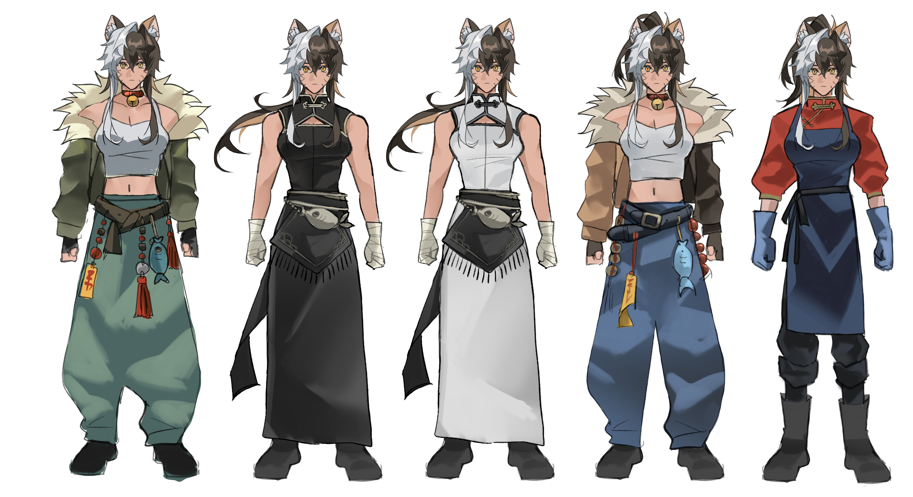
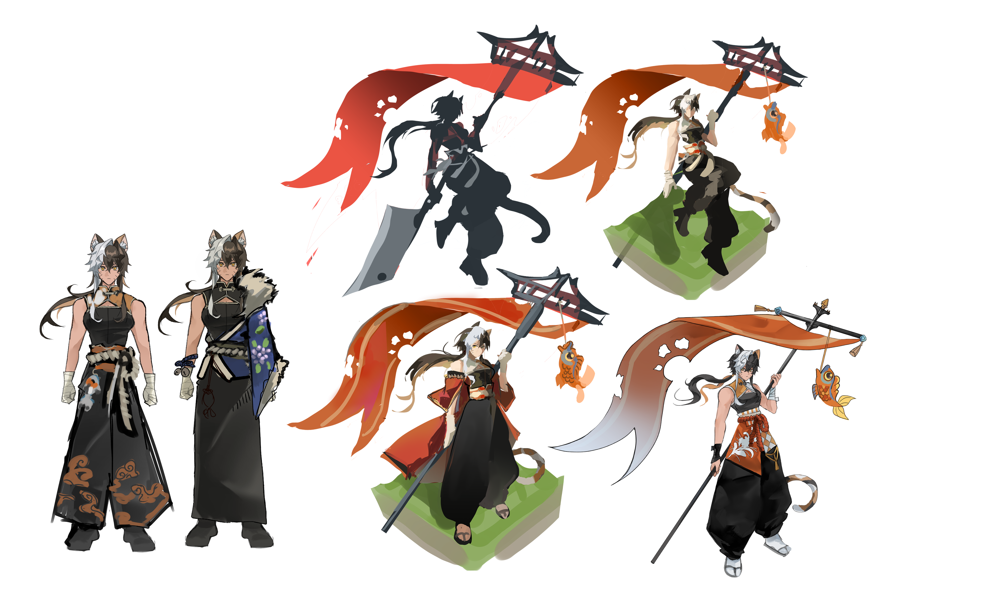
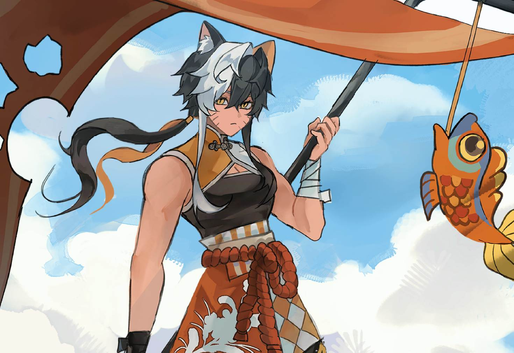
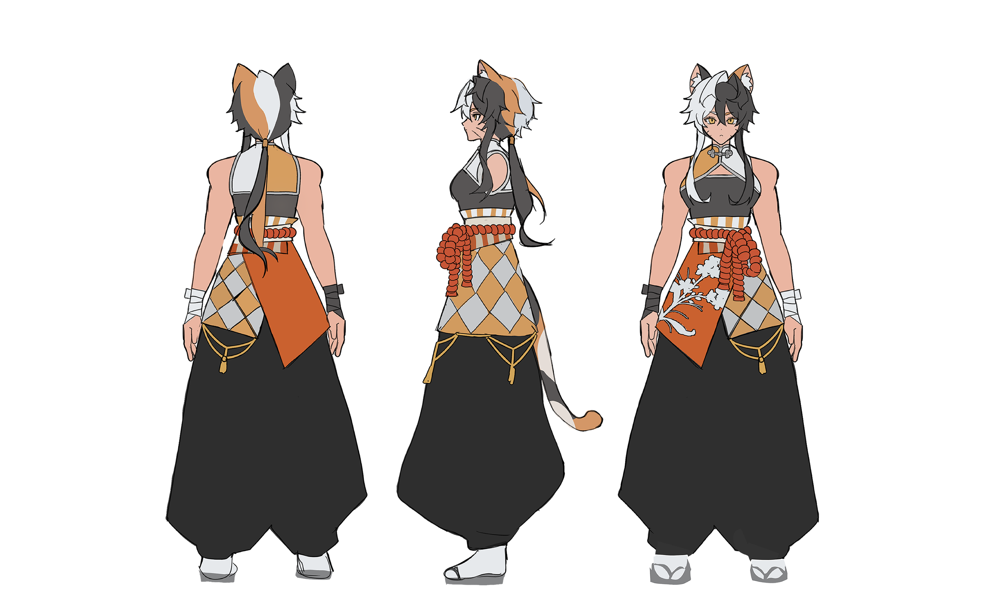
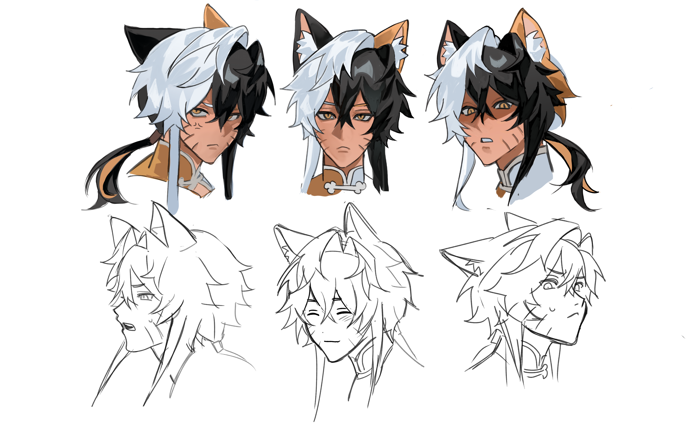

Character Design - Xiang Yu

-

Element 1
When coming up with Xiang Yu's
design, there were three
aspects I wanted to consider.
Her occupation, her personality
and the modern xianxia setting.
These are important aspects to
depict for me, as the more
intentional design the more
intruiging it is. It also adds
subtle storytelling,
another aspect you can trust your
audiences with so they can come
to learn more about your
character.
-

Element 2
Silhouettes are another important
factor of character design. I decided
to use the shape of her hair to make
her face even more 'Cat like' with
its fluffiness. For her overall
figure in the splash art, I really
utilised 'White space', this makes
aspects like her ponytail, tail, ears
and weapon more clear even without finer
details.
-

Elements 3
Considering the previous element. This technique subtly helps audiences
recognise a character more immediately.
Oftentimes, this means exaggerating features
like the hair like I did. White space
can also be used more intentionally,
for example the paw shaped rip in
Xiang Yu's flag
-

Element 4
As for her outfit, I brainstormed
with many ideas. I first wanted
to show more of her 'bold'
personality with a more street
wear inspired look with talisman
to represent the modern xianxia
aspects. Then I considered her
occupation as a fish mongerer,
as it is applicable to the story as
well.
Then I wanted to try going for a
more ancient Chinese style for
the xianxia factor.
-

Element 5
I decided for Xiang Yu to be a
calico cat not only as a unique
trait for my character but also
to subtly represent her
personality. Calicos are known
for being more assertive and
spunky whilst being a little
intelligent.
Her bright yellow eyes are also
representative of her
personality, as the trait is
associated with hunters.
Character Design - Ru Yingwei